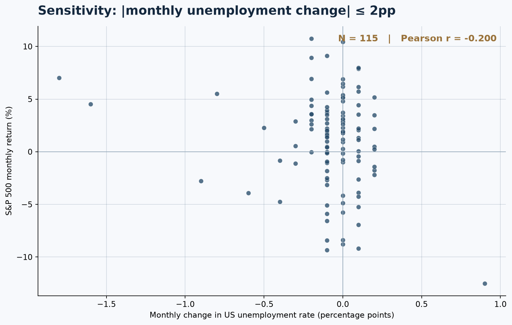

01 / Research question
What can contemporaneous monthly data tell us?
US unemployment and the S&P 500 reflect different economic processes. This exploratory study joins the monthly change in the unemployment rate to monthly S&P 500 percentage returns, then checks whether the result is sensitive to extreme labor-market shocks.
117 Matched months in original run
+0.168 Full-sample Pearson r
2 Sensitivity views
02 / Full sample
The initial association

03 / Robustness
Do outliers dominate the story?

A contemporaneous correlation is not a forecast and does not establish that unemployment changes cause equity returns. Choice of frequency, recession periods, release lags and historical sample window all matter.
04 / Research provenance
Inspect the underlying analysis
Two FRED series are used: UNRATE (US unemployment rate) and SP500 (S&P 500 index). Both are aggregated at month-start frequency; differences and percentage returns are calculated before combining overlapping observations. The most recent incomplete month is excluded.